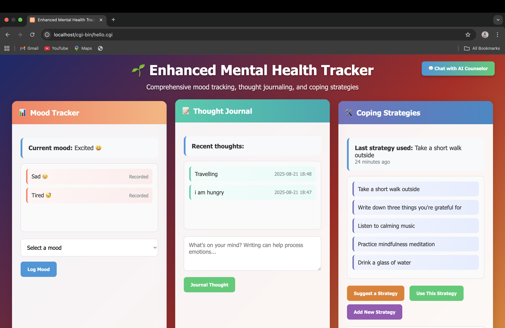
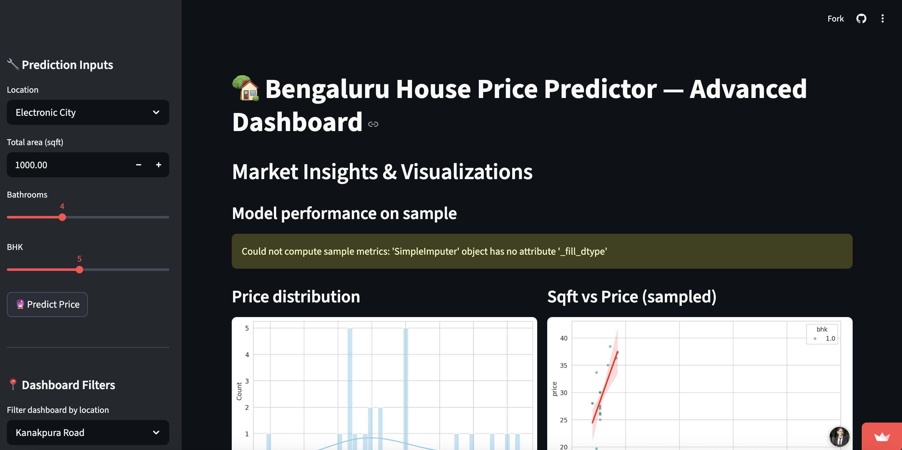

An interactive mental wellness system that tracks mood, thoughts, and coping strategies. Built using C++ backend logic with HTML and CSS frontend.

Developed a machine learning model to predict house prices using advanced regression techniques. Performed data preprocessing and visualization using NumPy, Pandas, Matplotlib, and Seaborn. Built an interactive Streamlit web app for real-time predictions.
Developed an AI-based task optimization system using Machine Learning and Computer Vision techniques. Integrated live webcam, image upload, and voice input features to detect user emotions in real-time. Utilized emotion detection datasets to analyze user mood and provide intelligent task recommendations.